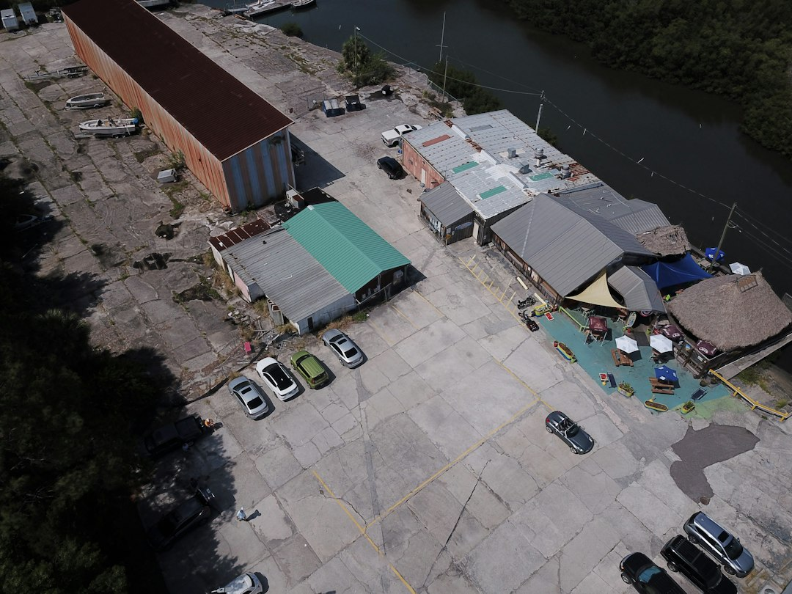

Tampa roof work usually turns on whether a roof-level inspection supports a localised repair or a full replacement. No fixed price is published, because size, pitch, material, decking repairs, permits and inspections affect the quote. Homeowners should use licensed Florida roofers, verify the licence at MyFloridaLicense.com, and ask for an itemised written estimate covering material, tear-off, decking, permit and warranty.
For homeowners comparing roof repair tampa options after a leak, storm damage or an ageing roof, the useful starting point is evidence from an inspection, not a driveway guess.
Roof Repair Tampa Explained
Roofing Contractors Tampa presents the first decision as repair or replacement after a real inspection. A useful quote should explain what was found on the roof, what damage is visible, whether decking is in question, and which material suits the section being worked on.
Tampa roofs face heat, UV, afternoon storms and hurricane-season wind. Those pressures do not automatically mean replacement. They do make the inspection notes important, especially where the options include architectural shingles, barrel tile, standing-seam metal, or a membrane over a low-slope area.
- Ask whether the leak is localised or part of a repeated pattern.
- Ask what was seen from roof level, not only from the ground.
- Ask whether decking, permit and warranty items are included in writing.
When repair is the narrower answer
A repair is most defensible when the damage is limited and the rest of the roof is sound. The published guidance says a targeted repair can be the smarter spend in that situation, while replacement earns its cost when leaks keep returning or the roof has aged out.
The quote should identify the affected area, the proposed material, and whether the issue is tied to storm damage, worn roofing, or a specific leak path. If repeat leaks are part of the history, ask what would make another patch fail. A related Tampa roof repairs guide uses the same repair-first decision frame.
Mixed roofs deserve extra care. A pitched main roof and a low-slope addition may need different materials. The source content names TPO and modified bitumen for low-slope roofs, so ask why that specification fits the section being repaired.
Replacement questions before signing
Replacement becomes a stronger option when the roof is ageing, leaks keep coming back, or the inspection shows conditions that a small repair will not solve. The published service detail describes full roof replacement using Florida Building Code compliant materials and proper ventilation.
An itemised estimate lets homeowners compare quotes beyond one total number. Material, tear-off, decking, permit and warranty should be visible. If a quote leaves permit responsibility unclear, or treats decking only as a vague allowance, ask for that wording before work starts.
- For shingle roofs, ask which architectural asphalt shingle is proposed.
- For tile roofs, ask about concrete or clay tile and code-compliant underlayment.
- For metal roofs, ask how the system addresses Florida wind and salt exposure.
- For low-slope areas, ask whether TPO or modified bitumen is being specified and why.
Who this applies to
This guide is for Tampa and Hillsborough County homeowners dealing with a fresh leak, suspected storm damage, an ageing roof, or an inspection request connected to insurance or remaining useful life. It also suits owners comparing materials before seeking a formal quote.
Local context is useful when it changes the roof question. Historic bungalows in Hyde Park or Seminole Heights may raise structure and condition questions. Waterfront homes on Davis Islands may make exposure part of the material discussion. Newer homes around Tampa Palms may put age, warranty and repair suitability at the centre.
For storm damage, the published page says a proper inspection records damage in photos and writing. The roofer documents what is found. The insurer decides the claim outcome.
Licence, permit and insurance records
Florida roofing is regulated, and homeowners can verify a contractor licence at MyFloridaLicense.com before work begins. Do that check before money changes hands or a start date is agreed.
For roof replacement in Tampa, residential roof covering replacement generally requires a building permit and later inspections for Florida Building Code compliance. Many homeowners expect the contractor to pull the permit, but that responsibility should be confirmed in writing.
Insurance conversations need records. After a storm, ask for photos and a written account of the observed damage. The published page also notes that a wind mitigation inspection can qualify a homeowner for a premium discount. Keep inspection notes, estimates, permit details and warranty wording together.
- Document the problem. Note where water appeared inside, when it happened, and whether it followed a storm.
- Request an inspection. Ask for a roof-level inspection before relying on a repair or replacement recommendation.
- Check the licence. Verify the Florida roofing licence at MyFloridaLicense.com before work begins.
- Compare itemised quotes. Review material, tear-off, decking, permit and warranty lines rather than comparing only total price.
- Keep insurance records. Save photos, written inspection notes, estimates and permit details for any insurer discussion.
| Question | Repair leaning | Replacement leaning |
|---|---|---|
| Damage pattern | Damage is localised and the rest of the roof is sound | Leaks keep returning or the roof has aged out |
| Quote basis | Specific leak path or storm damage is documented | Material, tear-off, decking, permit and warranty are itemised |
| Material discussion | Work matches the affected roof section | Whole-system choice covers shingles, tile, metal, or low-slope membrane |
| Compliance focus | Roofer explains how the repair fits the roof condition | Florida Building Code compliance and inspections are part of the plan |
Common questions
How much should I expect to pay for roof work in Tampa? No fixed price is published. Cost depends on roof size, pitch, material, and whether code upgrades or decking repairs are required.
Do I need a permit for a roof replacement? Residential roof covering replacement in Tampa generally requires a building permit and inspections for Florida Building Code compliance. Confirm in writing who will pull the permit.
Can storm damage be repaired instead of replaced? Sometimes. The answer depends on the extent of damage, roof age, and whether the roof meets current Florida Building Code standards.
What should be in a written estimate? An itemised estimate should make material, tear-off, decking, permit and warranty clear enough to compare quotes like with like.
Who decides an insurance claim? The roofer documents damage with photos and writing, but the insurer decides the claim outcome. Keep inspection records and estimates together.
This guide covers practical repair, replacement, inspection, permit and documentation questions for Tampa homeowners comparing roofing options.